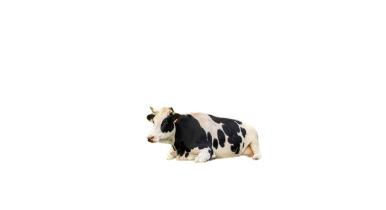

<!DOCTYPE html>
<html lang="en">
<head>
  <meta charset="UTF-8" />
  <meta name="viewport" content="width=device-width, initial-scale=1.0" />
  <title>Lucid</title>
  <link rel="icon" type="image/png" href="dream-favicon.png" />
  <link rel="apple-touch-icon" href="dream-favicon.png" />
  <style>
    /* Full-viewport layout: WebGL canvas fills the screen, cows overlay on top */
    * { margin:0; padding:0; box-sizing:border-box; }
    body { overflow:hidden; width:100vw; height:100vh; background:#aebbe8; }
    #c { display:block; position:fixed; inset:0; width:100vw; height:100vh; }
    #cow-layer {
      position:fixed; inset:0; pointer-events:none;
      /* clip cows to the frame so they slide out of view at its edge */
      clip-path: inset(14% 10% 14% 10% round 26px);
    }
    .cow-wrap { position:absolute; will-change:transform; }
    .cow-img {
      position:relative;
      z-index:2;
      display:block;
      width:100%;
      /* ethereal illustration: washed color, lifted blacks, cool lavender cast,
         pencil grain, and a soft edge so it reads as drawn, not photographed */
      filter:url(#cowGrain) saturate(0.5) contrast(0.72) brightness(1.14)
             sepia(0.14) hue-rotate(-12deg) blur(0.5px);
      opacity:0.92;
    }
    /* soft contact shadow grounding the cow on the grass */
    .cow-shadow {
      position:absolute;
      z-index:1;
      left:8%;
      bottom:17%;   /* sits at the hoof line, not below the empty canvas edge */
      width:84%;
      height:12%;
      border-radius:50%;
      background:radial-gradient(ellipse, rgba(40,72,52,0.5) 0%, rgba(40,72,52,0.2) 55%, transparent 78%);
      filter:blur(4px);
    }
    /* resting cow sits low and wide on the ground */
    .sit-shadow { left:4%; width:92%; height:16%; bottom:6%; }
  </style>
</head>
<body>
<!-- WebGL fullscreen canvas: paints the pastel sky, grass hill, and paper frame -->
<canvas id="c"></canvas>
<!-- DOM overlay for clickable cows — sits above the canvas, clipped to the frame -->
<div id="cow-layer"></div>
<!-- SVG filter applied to cow sprites so they match the shader's pencil-grain look -->
<svg width="0" height="0" style="position:absolute" aria-hidden="true">
  <filter id="cowGrain" x="-5%" y="-5%" width="110%" height="110%">
    <feTurbulence type="fractalNoise" baseFrequency="0.7" numOctaves="2" result="noise"/>
    <feColorMatrix in="noise" type="matrix"
      values="0 0 0 0 0.5  0 0 0 0 0.5  0 0 0 0 0.5  0.33 0.33 0.33 0 0" result="mono"/>
    <feComponentTransfer in="mono" result="fade">
      <feFuncA type="linear" slope="0.3" intercept="0"/>
    </feComponentTransfer>
    <feComposite in="fade" in2="SourceAlpha" operator="in" result="maskedNoise"/>
    <feMerge>
      <feMergeNode in="SourceGraphic"/>
      <feMergeNode in="maskedNoise"/>
    </feMerge>
  </filter>
</svg>
<script>
// ---------------------------------------------------------------------------
// Lucid dream — two layers:
//   1. WebGL fragment shader  → animated pastel landscape (sky, grass, frame)
//   2. DOM cow overlay        → click-to-spawn cows that walk the hill
// The shader and cow JS share the same hill math so hooves sit on the crest.
// ---------------------------------------------------------------------------

const canvas = document.getElementById('c');
const gl = canvas.getContext('webgl');

function resize() {
  // render at lower resolution when embedded in the gallery — big perf win
  const dpr = Math.min(devicePixelRatio, window.self === window.top ? 2 : 1.25);
  canvas.width = window.innerWidth * dpr;
  canvas.height = window.innerHeight * dpr;
  gl.viewport(0, 0, canvas.width, canvas.height);
}
window.addEventListener('resize', resize);
resize();

// Fragment shader: every pixel is computed from noise fields + cursor warp.
// Domain warping (fbm fed back into fbm) creates the soft colored-pencil wisps.
const frag = `
precision highp float;
uniform vec2  uRes;
uniform float uTime;
uniform vec2  uMouse;      // smoothed cursor, 0..1 (y up)
uniform float uMouseVel;   // smoothed cursor speed

// ---- noise ----
vec2 hash2(vec2 p) {
  p = vec2(dot(p, vec2(127.1, 311.7)), dot(p, vec2(269.5, 183.3)));
  return -1.0 + 2.0 * fract(sin(p) * 43758.5453123);
}
float noise(vec2 p) {
  vec2 i = floor(p), f = fract(p);
  vec2 u = f * f * (3.0 - 2.0 * f);
  return mix(
    mix(dot(hash2(i + vec2(0,0)), f - vec2(0,0)),
        dot(hash2(i + vec2(1,0)), f - vec2(1,0)), u.x),
    mix(dot(hash2(i + vec2(0,1)), f - vec2(0,1)),
        dot(hash2(i + vec2(1,1)), f - vec2(1,1)), u.x), u.y);
}
float fbm(vec2 p) {
  float v = 0.0, a = 0.5;
  for (int i = 0; i < 5; i++) {
    v += a * noise(p);
    p = p * 2.03 + vec2(17.7, 9.2);
    a *= 0.5;
  }
  return v;
}
float grain(vec2 p) {
  return fract(sin(dot(p, vec2(12.9898, 78.233))) * 43758.5453);
}
float sdRoundRect(vec2 p, vec2 halfSize, float r) {
  vec2 q = abs(p) - halfSize + r;
  return length(max(q, 0.0)) + min(max(q.x, q.y), 0.0) - r;
}

void main() {
  vec2 uv = gl_FragCoord.xy / uRes;
  float aspect = uRes.x / uRes.y;
  vec2 p = vec2(uv.x * aspect, uv.y);   // aspect-corrected coords for shapes
  vec2 m = vec2(uMouse.x * aspect, uMouse.y);

  // ---- 1. cursor lens: warp the noise field around the pointer ----
  vec2 toM = p - m;
  float dM = length(toM);
  float lens = exp(-dM * dM * 6.0);
  // swirl + push: the field is dragged toward/around the cursor
  vec2 swirl = vec2(-toM.y, toM.x);
  vec2 warp = (toM * -0.22 + swirl * 0.28) * lens * (0.6 + uMouseVel * 2.2);

  // ---- 2. flowing domain-warped field (the colored-pencil wisps) ----
  float t = uTime * 0.045;
  vec2 q = p * 2.1 + warp;
  vec2 w1 = vec2(fbm(q + vec2(t, -t * 0.7)),
                 fbm(q + vec2(-t * 0.6, t * 0.8) + 4.7));
  vec2 w2 = vec2(fbm(q + 2.2 * w1 + vec2(1.9, 8.2) + t * 0.4),
                 fbm(q + 2.2 * w1 + vec2(6.1, 2.8) - t * 0.3));
  float f = fbm(q + 2.4 * w2);

  // secondary slower field for the big soft patches
  float g = fbm(p * 1.2 + w2 * 1.2 - t * 0.35);

  // ---- 3. pastel palette: layer colors by sampling the warped fields ----
  vec3 blue   = vec3(0.639, 0.702, 0.878); // periwinkle base
  vec3 blueDk = vec3(0.494, 0.576, 0.835); // deeper blue pools
  vec3 yellow = vec3(0.973, 0.933, 0.663); // buttery ribbons
  vec3 cream  = vec3(0.992, 0.973, 0.894); // bright glow
  vec3 pink   = vec3(0.945, 0.784, 0.827); // blush patches
  vec3 green  = vec3(0.706, 0.847, 0.729); // minty patches
  vec3 denim  = vec3(0.216, 0.306, 0.455); // muted navy pools

  // base: blue with darker pooling
  vec3 col = mix(blue, blueDk, smoothstep(0.05, -0.35, g));

  // occasional deep denim-navy pools drifting through the upper sky
  float df = fbm(p * 1.05 + w2 * 0.9 + vec2(12.6, 4.4) + t * 0.15);
  float denimAmt = smoothstep(0.22, 0.5, df) * smoothstep(0.28, 0.62, uv.y); // upper sky only
  col = mix(col, denim, denimAmt * 0.5);

  // green + pink soft patches ride their own slow fields
  float gf = fbm(p * 0.9 + w1 * 0.8 + vec2(9.4, 2.1) - t * 0.25);
  float pf = fbm(p * 0.9 - w1 * 0.7 + vec2(3.3, 7.7) + t * 0.2);
  col = mix(col, green, smoothstep(-0.02, 0.25, gf) * 0.9);
  col = mix(col, pink,  smoothstep(0.0, 0.26, pf) * 0.85);

  // yellow ribbons: band of the warped field
  float ribbon = smoothstep(0.04, 0.22, f) * smoothstep(0.6, 0.34, f);
  col = mix(col, yellow, ribbon * 0.95);

  // bright cream core inside the widest ribbon parts
  float core = smoothstep(0.22, 0.36, f) * smoothstep(0.5, 0.4, f);
  col = mix(col, cream, core * 0.9);

  // ---- 4. cursor glow: bright opening follows the pointer ----
  float glow = exp(-dM * dM * 14.0);
  col = mix(col, cream, glow * 0.6);
  col = mix(col, vec3(1.0), glow * glow * 0.55);

  // ---- 5. grassy hill (JS cows use the same hillH formula) ----
  // silhouette: a soft mound, taller near the left, with a wobbly noise edge
  float hillH = 0.30
              + 0.12 * exp(-pow((p.x - aspect * 0.28) * 2.2, 2.0))  // the mound
              + fbm(vec2(p.x * 2.4, 3.7)) * 0.025;                  // wobbly crest
  float hill = smoothstep(hillH + 0.006, hillH - 0.006, uv.y);

  // gradienty greens: deeper at the base, lighter at the crest
  vec3 grassLight = vec3(0.702, 0.855, 0.655);
  vec3 grassDeep  = vec3(0.365, 0.600, 0.420);
  float hd = smoothstep(hillH, hillH - 0.18, uv.y); // 0 at crest -> 1 down low
  vec3 grass = mix(grassLight, grassDeep, hd);
  // mottled pencil shading inside the grass
  grass += (fbm(p * 5.0 + 11.0) - 0.1) * 0.09;
  // faint warm rim right at the crest, like light catching the hilltop
  grass = mix(grass, vec3(0.886, 0.929, 0.769), smoothstep(0.035, 0.0, hillH - uv.y) * 0.5);
  // cursor glow spills onto the grass too
  grass = mix(grass, cream, glow * 0.35);

  col = mix(col, grass, hill);

  // ---- 6. post-processing: grain, vignette, cream-paper frame ----
  vec2 gp = gl_FragCoord.xy;
  float gr = grain(gp) * 0.5 + grain(gp * 1.7 + 31.0) * 0.5;
  // grain modulates strongest in mid-tones, like pigment on paper tooth
  float tone = dot(col, vec3(0.333));
  col += (gr - 0.5) * 0.13 * (0.55 + 0.45 * (1.0 - abs(tone - 0.6)));
  // subtle per-channel offset so grain reads as colored pencil, not noise
  col.r += (grain(gp + 7.0) - 0.5) * 0.02;
  col.b += (grain(gp + 13.0) - 0.5) * 0.02;

  // gentle vignette of paper
  col *= 1.0 - 0.06 * length(uv - 0.5);

  // ---- centered rounded-rect frame on cream paper (like ripple) ----
  vec2 center = vec2(0.5 * aspect, 0.5);
  float d = sdRoundRect(p - center, vec2(0.40 * aspect, 0.36), 0.06);
  // wide, slightly noisy transition band -> soft blurred edge into the paper
  float edge = 0.022 + fbm(p * 6.0 + 20.0) * 0.006;
  float frameMask = smoothstep(edge, -edge, d);
  vec3 paper = vec3(0.945, 0.937, 0.914);
  paper += (gr - 0.5) * 0.05; // paper keeps a whisper of grain too
  col = mix(paper, col, frameMask);

  gl_FragColor = vec4(col, 1.0);
}
`;

// Minimal WebGL setup: a single fullscreen quad, all visuals in the fragment shader.
function compile(type, src) {
  const s = gl.createShader(type);
  gl.shaderSource(s, src);
  gl.compileShader(s);
  if (!gl.getShaderParameter(s, gl.COMPILE_STATUS))
    console.error(gl.getShaderInfoLog(s));
  return s;
}

const prog = gl.createProgram();
gl.attachShader(prog, compile(gl.VERTEX_SHADER,
  'attribute vec2 a; void main(){ gl_Position = vec4(a, 0.0, 1.0); }'));
gl.attachShader(prog, compile(gl.FRAGMENT_SHADER, frag));
gl.linkProgram(prog);
if (!gl.getProgramParameter(prog, gl.LINK_STATUS))
  console.error(gl.getProgramInfoLog(prog));
gl.useProgram(prog);

const buf = gl.createBuffer();
gl.bindBuffer(gl.ARRAY_BUFFER, buf);
gl.bufferData(gl.ARRAY_BUFFER, new Float32Array([-1,-1, 1,-1, -1,1, 1,1]), gl.STATIC_DRAW);
const aLoc = gl.getAttribLocation(prog, 'a');
gl.enableVertexAttribArray(aLoc);
gl.vertexAttribPointer(aLoc, 2, gl.FLOAT, false, 0, 0);

const uRes      = gl.getUniformLocation(prog, 'uRes');
const uTime     = gl.getUniformLocation(prog, 'uTime');
const uMouse    = gl.getUniformLocation(prog, 'uMouse');
const uMouseVel = gl.getUniformLocation(prog, 'uMouseVel');

// Cursor is smoothed before reaching the shader so the warp/glow trails the pointer.
// uMouseVel amplifies the lens when the cursor moves quickly.
let tx = 0.72, ty = 0.25, cx = 0.72, cy = 0.25, vel = 0;
window.addEventListener('mousemove', e => {
  tx = e.clientX / window.innerWidth;
  ty = 1 - e.clientY / window.innerHeight;
});
window.addEventListener('touchmove', e => {
  const t = e.touches[0];
  tx = t.clientX / window.innerWidth;
  ty = 1 - t.clientY / window.innerHeight;
}, { passive: true });

// ================= cows =================
// Cows are DOM elements (not drawn in WebGL) so we can use PNG sprites and
// canvas-based leg animation. Each cow's y-position tracks the shader hill.
const cowLayer = document.getElementById('cow-layer');
const cows = [];
const cowImg = new Image();
cowImg.src = 'cow.png';

// Matches the shader's rounded-rect frame inset (10% sides, 14% top/bottom).
function frameBounds() {
  const W = window.innerWidth, H = window.innerHeight;
  return { x0: W * 0.10, x1: W * 0.90, y0: H * 0.14, y1: H * 0.86 };
}

// mirror of the shader's hill silhouette (sans the tiny fbm wobble):
// returns the crest's screen-y in px for a given screen-x in px
function hillScreenY(px) {
  const W = window.innerWidth, H = window.innerHeight;
  const aspect = W / H;
  const x = (px / W) * aspect;
  const h = 0.30 + 0.12 * Math.exp(-Math.pow((x - aspect * 0.28) * 2.2, 2));
  return (1 - h) * H;
}

// Walking cow: canvas sprite with procedural leg swing (see drawCowBody).
function spawnCow(px, py) {
  const el = document.createElement('div');
  el.className = 'cow-wrap';
  el.innerHTML = `<div class="cow-shadow"></div><canvas class="cow-img"></canvas>`;
  const canvas = el.querySelector('canvas');
  canvas.width = 308; canvas.height = 208; // half source res, plus leg swing room
  canvas.style.width = '100%';
  canvas.style.height = 'auto';
  // depth from click y: crest = small/far, frame bottom = large/near (perspective)
  const crest = hillScreenY(px);
  const fb = frameBounds();
  const depth = Math.min(1, Math.max(0, (py - crest) / (fb.y1 - 24 - crest)));
  const cow = {
    el, canvas, ctx: canvas.getContext('2d'),
    x: px, depth,
    dir: Math.random() < 0.5 ? -1 : 1,   // image faces right
    face: 0,                              // eased facing, -1..1
    speed: 12 + Math.random() * 10,
    spd: 0,                               // eased actual speed
    state: 'graze',
    until: performance.now() + 1200 + Math.random() * 2000,
    bobPhase: Math.random() * Math.PI * 2,
    dip: 0,                               // eased graze dip
    scale: 0,
  };
  cow.face = cow.dir; // spawn already facing its direction (no sliver flash)
  cowLayer.appendChild(el);
  cows.push(cow);
}

let cowCount = 0;
window.addEventListener('click', e => {
  // Clicks on sky/paper are ignored; only grass inside the frame counts.
  const fb = frameBounds();
  const inFrame = e.clientX > fb.x0 + 20 && e.clientX < fb.x1 - 20 &&
                  e.clientY > fb.y0 && e.clientY < fb.y1 - 12;
  if (!(inFrame && e.clientY > hillScreenY(e.clientX) + 6)) return;
  cowCount++;
  // every 3rd cow is a resting/sitting cow
  if (cowCount % 3 === 0) spawnSittingCow(e.clientX, e.clientY);
  else spawnCow(e.clientX, e.clientY);
});

// Every 3rd spawned cow rests instead of walking (static PNG + breathe animation).
const cowSitImg = new Image();
cowSitImg.src = 'cow-sitting.png';

function spawnSittingCow(px, py) {
  const fb = frameBounds();
  const crest = hillScreenY(px);
  const depth = Math.min(1, Math.max(0, (py - crest) / (fb.y1 - 24 - crest)));

  const el = document.createElement('div');
  el.className = 'cow-wrap';
  el.innerHTML = `<div class="cow-shadow sit-shadow"></div>` +
                 ``;
  cowLayer.appendChild(el);
  cows.push({
    el, sitting: true, x: px, depth,
    dir: Math.random() < 0.5 ? -1 : 1,   // sitting image faces left
    scale: 0,
    breathePhase: Math.random() * Math.PI * 2,
  });
}

// redraw the cow sprite with walking legs: the leg region of the PNG is
// re-drawn in thin rows, front and back halves sheared in opposite phase
// so the legs scissor like a gait. Shear grows toward the hooves.
function drawCowBody(c, moving) {
  if (!cowImg.complete || !cowImg.naturalWidth) return;
  const ctx = c.ctx, W = c.canvas.width, H = c.canvas.height;
  const sw = cowImg.naturalWidth, sh = cowImg.naturalHeight;
  const scale = (W - 8) / sw;
  const dh = sh * scale;
  const ox = 4, oy = H - dh - 2;

  const legTopS = sh * 0.58;              // where legs begin in the source
  const legBotS = sh * 0.79;              // actual hoof line (photo has empty space below)
  const legTopD = oy + legTopS * scale;
  const legBotD = oy + legBotS * scale;
  const amp = 17 * moving;                // swing amplitude in device px

  ctx.clearRect(0, 0, W, H);
  // body (above the legs) in one blit
  ctx.drawImage(cowImg, 0, 0, sw, legTopS, ox, oy, sw * scale, legTopS * scale);

  // four leg bands (measured from the actual leg pixels in the photo),
  // each with its own phase — a cow's 4-beat walk: one leg at a time,
  // each a quarter-cycle apart
  const BANDS = [
    { x0: 0.00, x1: 0.255, ph: 0 },             // far rear leg
    { x0: 0.255, x1: 0.45, ph: Math.PI },       // near rear leg
    { x0: 0.45, x1: 0.594, ph: Math.PI * 1.5 }, // far front leg
    { x0: 0.594, x1: 1.00, ph: Math.PI * 0.5 }, // near front leg
  ];

  const step = 2;
  for (let y = legTopD; y < legBotD + step; y += step) {
    const srcY = (y - oy) / scale;
    const t = Math.min(1, (y - legTopD) / (legBotD - legTopD)); // 0 hip, 1 hoof
    for (const b of BANDS) {
      const sx = sw * b.x0, sW = sw * (b.x1 - b.x0);
      // t^2: hips stay planted (no seams in the solid belly pixels),
      // hooves swing the most
      const dx = Math.sin(c.bobPhase + b.ph) * amp * t * t;
      ctx.drawImage(cowImg, sx, srcY, sW, step / scale,
                    ox + sx * scale + dx, y, sW * scale, step);
    }
  }
}

// Cow animation loop (separate from the shader render loop).
let cowLast = performance.now();
function updateCows(now) {
  let dt = (now - cowLast) * 0.001;
  cowLast = now;
  if (dt > 0.05) dt = 0.05;

  const fb = frameBounds();
  const w = 165;
  const gone = [];

  for (const c of cows) {
    if (c.sitting) {
      // Resting cow: scale-in, gentle breathe, no locomotion
      c.scale = Math.min(1, c.scale + dt * 2.5);
      c.breathePhase += dt * 1.1;
      const fade = Math.min(1, c.scale * 1.2);

      const crest = hillScreenY(c.x);
      const y = crest + c.depth * (fb.y1 - 24 - crest);
      const size = (0.5 + c.depth * 0.7) * c.scale;
      const breathe = Math.sin(c.breathePhase) * 0.5;      // subtle belly rise
      const sw2 = 175;
      c.el.style.width = sw2 + 'px';
      c.el.style.left = (c.x - sw2 / 2) + 'px';
      c.el.style.top = (y - 74) + 'px';
      c.el.style.opacity = fade;
      c.el.style.transformOrigin = '50% 92%';
      c.el.style.transform =
        `translateY(${breathe}px) scale(${size * c.dir}, ${size})`;
      c.el.style.zIndex = Math.round(100 + c.depth * 100);
      continue;
    }

    // Walking cow: constant horizontal drift, leg gait, removed when off-screen
    c.spd += (c.speed - c.spd) * Math.min(1, dt * 2.5);
    c.x += c.dir * c.spd * dt;

    // walk off the frame: once fully past the clipped edge, retire the cow
    if (c.x - w > fb.x1 || c.x + w < fb.x0) { gone.push(c); continue; }

    // facing stays fixed to travel direction (no turning back)
    c.face += (c.dir - c.face) * Math.min(1, dt * 4);

    // grow-in on spawn
    c.scale = Math.min(1, c.scale + dt * 3);
    c.dip = 0;

    // stand on the hill at this x, at the clicked depth; deeper = bigger
    const crest = hillScreenY(c.x);
    const y = crest + c.depth * (fb.y1 - 24 - crest);
    const size = (0.45 + c.depth * 0.65) * c.scale;

    // gait: bob speed follows actual speed; walking adds a gentle rocking sway
    const moving = c.spd / c.speed; // 0..1
    c.bobPhase += dt * (1.4 + moving * 4.5);
    const bob = Math.sin(c.bobPhase) * (0.4 + moving * 1.0);
    const rock = Math.sin(c.bobPhase * 0.5) * moving * 1.6;
    const nibble = c.dip > 0.5 ? Math.sin(c.bobPhase * 1.7) * 2.0 * (c.dip / 8) : 0;
    const tilt = (c.dip + nibble + rock);

    drawCowBody(c, moving);

    c.el.style.width = w + 'px';
    c.el.style.left = (c.x - w / 2) + 'px';
    c.el.style.top = (y - 92) + 'px';
    c.el.style.transformOrigin = '60% 88%';
    // face eases through 0 — the cow foreshortens as it pivots to the other side
    const fx = Math.max(0.12, Math.abs(c.face)) * Math.sign(c.face || 1);
    c.el.style.transform =
      `translateY(${bob}px) scale(${size * fx}, ${size}) rotate(${tilt * Math.sign(fx)}deg)`;
    c.el.style.zIndex = Math.round(100 + c.depth * 100); // deeper cows in front
  }

  // retire cows that walked off the frame
  for (const c of gone) {
    c.el.remove();
    cows.splice(cows.indexOf(c), 1);
  }
  requestAnimationFrame(updateCows);
}
requestAnimationFrame(updateCows);

// Shader render loop: eases cursor, uploads uniforms, draws the fullscreen quad.
const t0 = performance.now();
function render(now) {
  const dx = tx - cx, dy = ty - cy;
  cx += dx * 0.06;
  cy += dy * 0.06;
  vel += (Math.min(Math.hypot(dx, dy) * 4, 1) - vel) * 0.08;

  gl.uniform2f(uRes, canvas.width, canvas.height);
  gl.uniform1f(uTime, (now - t0) * 0.001);
  gl.uniform2f(uMouse, cx, cy);
  gl.uniform1f(uMouseVel, vel);
  gl.drawArrays(gl.TRIANGLE_STRIP, 0, 4);
  requestAnimationFrame(render);
}
requestAnimationFrame(render);
</script>
</body>
</html>
